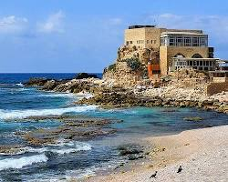
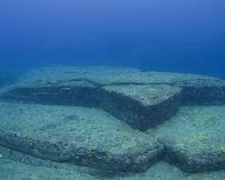
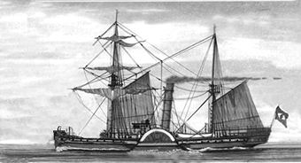
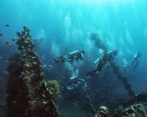

Bem-vindo!
Conheça os principais destinos de Mergulho e Naufrágio
Explore os melhores pontos no mundoCidade Submersa de Heracleion, Egito

Cidade Submersa de Heracleion, Egito: Descoberta em 2000, essa antiga cidade portuária oferece um vislumbre da civilização egípcia no Mar Mediterrâneo.
Pavlopetri, Grécia

Considerada a cidade submersa mais antiga da Europa, Pavlopetri data do período micênico e oferece um testemunho da vida cotidiana na Grécia antiga..
Baía de Caesarea, Israel
Antigo porto romano, a Baía de Caesarea abriga ruínas de um hipódromo, um teatro e um porto, além de diversos artefatos históricos.
Yonaguni Monument, Japão
Uma formação rochosa submersa de origem natural ou artificial, o Yonaguni Monument intriga pesquisadores e mergulhadores há décadas.
Baía de Chetumal, México

Essa região abriga diversos sítios arqueológicos submersos da civilização maia, incluindo estruturas e artefatos.
Conheça alguns Naufrágios Históricos
Site de pesquisa Brasil: Naufrágios do BrasilNaufrágio do Vapor Bahia
Ponta de Pedras, PE Naufrágio do Pinguino
Costa Verde, RJ
Naufrágio do Príncipe das Astúrias
Ilha Bela, SP
Naufrágio do SS Thistlegorm
Mar Vermelho, Egito
Naufrágio do USS Liberty
Tulamben, Bali Naufrágio do Endurance
Mar de Weddell, Antártida